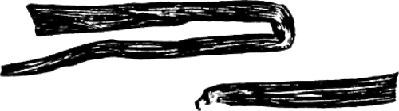

Ваниль

Плоды (стручки) вьющегося растения (лианы) семейства орхидейных. Имеется два ботанических вида ванили, которые используются в культуре для получения пряности — Vanilla planifolia и Vanilla pompona.

Первая дает несколько культурных сортов ванили лучшего качества, с длинными стручками в 20—25 сантиметров, вторая — короткие стручки более низкого качества. Родина ванили — Мексика и Центральная Америка. Культивируется эта пряность во многих странах Карибского бассейна (Ямайка, Гаити, Гваделупа, Мартиника), в тропической части Южней Америки (особенно в Гвиане), на Цейлоне, в Малайзии, на Мадагаскаре, Реюньоне, Сейшельских, Коморских островах, на о-ве Маврикий и в Полинезии — на Таити и Гавайях. Основное производство ванили сосредоточено в настоящее время на о-вах Реюньон и Мадагаскар (50% мирового производства).
Прежде чем превратиться в пряность, ванильные стручки проходят довольно длительную обработку: их срывают незрелыми, когда они лишены запаха, погружают на 20 секунд в горячую воду (80—85°), затем в течение недели ферментируют в шерстяных одеялах при температуре 60°, в результате чего стручки приобретают аромат и коричневый цвет; после этого от одного до нескольких месяцев ваниль сушат на открытом воздухе, в тени, до тех пор, пока на стручках не появится белый налет. Понятно, что в процессе обработки качество ванили может быть улучшено или ухудшено, поэтому в международной торговле принято различать восемь сортов ванили, учитывающих все сочетания ее естественных и приобретенных качеств (изысканная длинная, прекрасная длинная, достаточно прекрасная, хорошая, прекрасная короткая и др.)
Капризность ванили как культуры, необходимость ее искусственного опыления, в результате которого лишь 50% цветков дают стручки, а также длительность ее обработки привели к тому, что ваниль и по сей день остается одной из самых дорогих пряностей на мировом рынке. Дороговизна ванили побудила ряд стран к производству ее искусственного заменителя— ванилина. Однако замена эта далеко не полноценна, так как тонкий аромат настоящей ванили зависит не только от присутствия химически чистого ванилина, но и от целого ряда дополнительных веществ. Так, часто плоды, содержащие меньше ванилина, пахнут приятнее и сильнее плодов с высоким процентом ванилина. По-видимому, тонкость и стойкость аромата настоящей ванили связаны не с ванилином, а с очень ароматным маслянистым веществом, содержащимся в ванили, состав которого до сих пор не изучен.
Готовые стручки (палочки) ванили, обычно длиной от 10 до 20 сантиметров, должны быть мягкими, эластичными, слегка скрученными, маслянистыми на ощупь, темно-коричневого, иногда даже черно-коричневого цвета. Стручки лучших сортов покрыты налетом беловатых кристаллов. Светлоокрашенные и раскрытые, потрескавшиеся или ломкие твердые палочки означают, что ваниль низкого качества, она наполовину выдохлась из-за неправильного приготовления или хранения. Стойкость запаха лучших сортов настоящей ванили поразительна. Известны случаи, когда плоды ванили полностью сохраняли свой аромат (при правильном хранении) спустя 36 лет после изготовления. В то же время плохие сорта ванили быстро разрушаются и утрачивают аромат, особенно в неблагоприятной обстановке. Некоторые сорта ванили пахнут не ванилином, а гелиотропом, так как в них носителем аромата является пиперонал (гелиотропин). Эти сорта считаются в торговле менее ценными.
Ваниль — самая молодая из классических пряностей. Правда, в Испании, Италии, Австрии она стала известна с середины XVI века, но в остальных странах Европы значительно позднее — в начале XIX века, — да и употреблялась первоначально лишь в крайне узком, изысканном кругу. Это подлинная «аристократка» даже среди классических пряностей. Кроме того, диапазон применения ванили ограничен кондитерскими изделиями и сладкими блюдами, причем и здесь ваниль занимает привилегированное положение как пряность, идущая на ароматизацию самых дорогих кондитерских изделий: шоколада и какаосодержащих продуктов, бисквитов и изделий из бисквитного теста, кремов, пломбиров, ореховых печений. Ваниль используют также для приготовления ликеров. Гораздо реже вводят ваниль в другие сладкие блюда (компоты, желе, суфле, парфе, пудинги, творожные пасты, некоторые виды варений), а ведь их ароматические качества при этом значительно улучшаются. Во всех перечисленных случаях обычно пользуются не настоящей ванилью, а ванилином.
Ваниль вводят в изделие либо непосредственно перед тепловой обработкой (в тесто), либо (чаще) сразу после нее, в еще не остывшее блюдо (в пудинги, суфле, компоты, варенье и т. п.), а в холодные блюда (например, творожные пасты) после их приготовления. Бисквиты, торты пропитывают ванильным сиропом уже после выпечки. Способ внесения ванили в изделие таков: часть палочки ванили тщательно растирают в фарфоровой ступке с сахарной пудрой, постепенно добавляя сахар до тех пор, пока вся ваниль не разотрется, и затем этот ванильный сахар вмешивают в крем, пасту или посыпают им уже готовое изделие (блюдо)1 .
Нормы употребления ванили сравнительно невелики: от 1/20 части палочки и больше в расчете на порцию или 1/4 палочки на килограмм продуктов, вложенных в тесто. Для приготовления ванильного сахара одной палочки ванили хватает на 0,5 килограмма сахара. Для обсыпки некоторых кондитерских изделий можно приготавливать ванильный сахар меньшей концентрации, для чего достаточно просто хранить ванильные палочки вместе с сахарной пудрой в одной банке: сахар пропитается достаточно сильным запахом ванили.